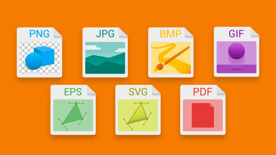
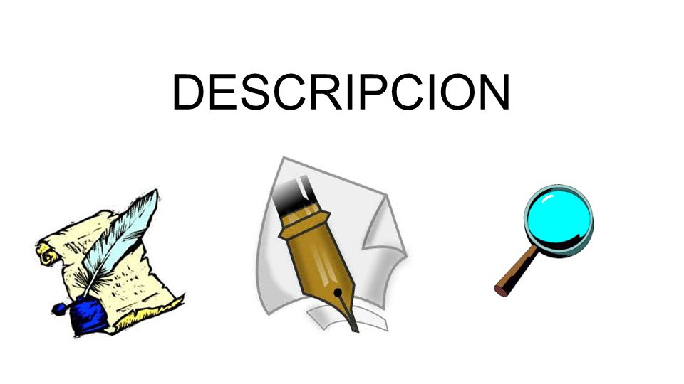

Para agregar una imagen basta con escribir el siguiente codigo en medio de: <img src="carpeta/nombre_imagen.png" alt="descripción">
src (source)
Es necesario y obligatorio especificar la ruta para que el navegador pueda encontrar la imagen, siempre desde la carpeta donde se encuentra el fichero html, e indicando obligatoriamente la extensión del archivo (jpg, gif, png o svg).

Texto alternativo
Es importante añadir información de tipo textual a la imagen para que los buscadores (a nivel de SEO) puedan saber qué muestra la imagen e indexar esta información, y los dispositivos "lectores de pantalla" para personas invidentes, puedan describir la imagen oralmente. Para ello utilizamos el parámetro alt, seguido de la "descripción de la imagen".

Imágenes y CSS (responsive design)
Actualmente, donde ya no se concibe una web que no sea responsive, las imágenes deben adaptarse (sin pixelarse ni deformarse) al tamaño de la caja donde estén contenidas. Por ello, ya no se indican tamaños (width y mucho menos height) fijos o en píxeles, sino que todo se especifica por porcentajes. Así, no puede faltar este bloque de declaraciones CSS en cualquier de nuestros proyectos:
img{
max-width:100%;
vertical-align:top;
}
img{...} es un selector que afectará a todas las imágenes que tengamos (no tiene delante del img ni el símbolo '.' ni '#'').
Por su parte, la propiedad max-width especifica que todas las imágenes se adaptarán al 100% del ancho de la caja que las contiene (de manera proporcional), pero que nunca se ampliarán más de su tamaño original (para que no se vean pixeladas)
Espacio que se elimina con vertical-align.vertical-align sirve para que se elimine el espacio que queda debajo de cualquier imagen (espacio que queda entre la parte inferior de la imagen y el borde inferior de la caja). Su valor puede ser indistintamente top o bottom.
vertical-align:top;
vertical-align:bottom;
figure y figcaption
es un nuevo tipo de caja de HTML5 con contenido semántico propio orientado a contener imágenes, con la interesante posibilidad de añadir un pie de imágen vinculada a ésta. De esta manera el navegador y cualquier robot que acceda a nuestra página conocerá la naturaleza del contenido que contiene este tipo de bloque y su información asociada.
Es IMPORTANTE saber que las cajas de tipo no son display:"block" (como el resto de cajas), sino que son "inline-block", por lo que los siguientes elementos HTML de tipo "inline" o "inline-block" se ubicarán en la misma fila.
es otro tipo de etiqueta con una funcionalidad diferente, ya que está orientada a que el navegador muestre una u otra imagen dependiendo de la resolución del dispositivo utilizado.
<figure>
<img src="img/imagen.png">
<figcaption>
Este texto es el <figcaption> de esta imagen
</figcaption>
Para añadir un pie de imagen, utilizamos la etiqueta <figcaption> seguida del texto que se mostrará como pie vinculado a la imagen.
Para dar características al texto del figcaption (pie de imagen) con CSS, debemos utilizar el selector:
figcaption {
...
}